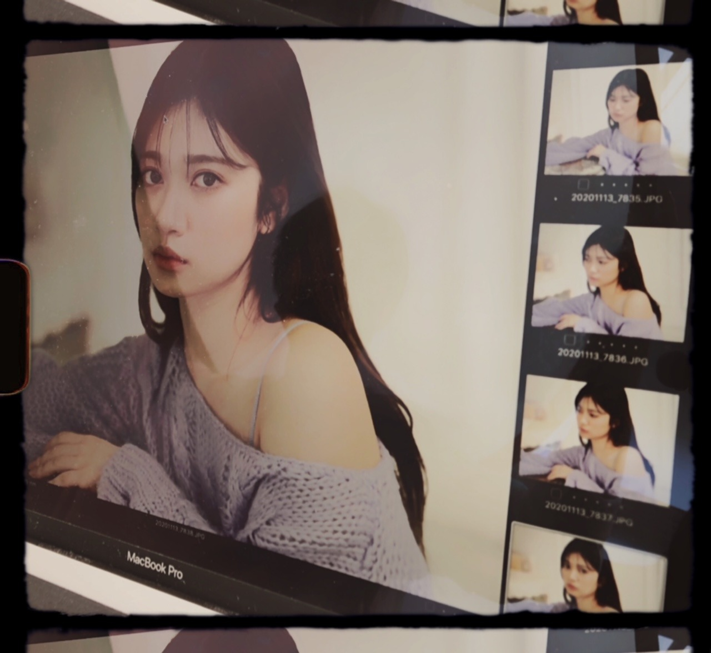

2020/1228Mon苺
継続することの大切さと大変さ
また、武道館で公演を出来ていることの嬉しさ
色んな思い出のある場所なので
気持ちがいっぱいになりました。
でも、まだまだ未熟者です。
未熟者でありたいです。
経験したことない事が勿論沢山あって
来年も沢山はじめての出会いや経験
色んなことお互い乗り越えていければと思っています。✨
Live有難うございました。
配信で見てくださった方も本当に本当に
有難うございました。
少しでも皆さんが笑顔になってくれる
時間になっていれば何よりです。
皆さん元気にしていますか。？
私は元気ですよ。✨
寒い日も続きますし
今年は例年よりも更に風邪や体調には気をつけなきゃなので
皆さんも少しでも疲れたら一休みしたり
体調を崩す前に
手洗いうがい
換気
除菌
色々出来ることは対策しましょう。！！
私もいつもより手を洗ったり除菌することが増えたので手が乾燥します。
これも良くないことなので
皆さん、保湿もしっかりしましょう。！！
書きたいこと沢山あるのですが
その前にブログを上げたい気持ちが
拙い言葉ばかりですが
とにかく。！！
もう、年末ですね
来年も仲良くして下さいね。✨
紅白やレコ大
本当に有り難く思います。
健康と安全第一で2020年最後まで頑張ります。
応援宜しくお願い致します。☺️✨

乃木中私も観てましたよー。
Instagramにて質問やコメント募集中です。
今年最後に
会えなくても繋がりを感じられる場所だと思っているので良かったら。
コメント(339)
今日は大晦日ですね。
紅白で良い締めくくりができますように！
蘭世ちゃんのポジションは分かったので、絶対見つけるよ☺️
今年も1年、本当にありがとうございました。
なかなか思うようにいかない1年でしたが、
蘭世ちゃんには沢山元気や癒しをもらったなあ。
メールやブログ、Instagramなど、
会えなくても繋がれてるって感じられることが多くて毎日頑張れてました。
歌番組やバラエティ、雑誌など色んな場所で活躍を見ることができたのも嬉しかったです☺️
今年最後にお手紙出してきたよ。
届くのは来年になるけど、今年1年の感謝や蘭世ちゃんへの思いを詰め込みました。
良かったら読んでください☺︎
それでは！紅白楽しみにしてます♡
頑張ってね！！
2020年も今日で最後ですね。色々あったね、本当にお疲れ様でした。そして本当にありがとう。
蘭世ちゃんに沢山笑顔と元気をいただきました。
2021年は少しでも明るく楽しい1年になりますように。
蘭世ちゃんが笑顔でしあわせに溢れた素晴らしい年になりますように願っています。
蘭世ちゃん大好きです。ずっと応援しています！
来年もなかよくしてくれたら嬉しいです:-)
良いお年を。またね:-)
いかがお過ごしでしょうか。僕は元気です。
昨夜のレコード大賞にて『世界中の隣人よ』のパフォーマンスを観ました。以前、蘭世が神宮球場でこの曲を披露した時のことが強く思い出に残っていたので、大舞台でこの曲をパフォーマンスするにあたって、蘭世がその場に選ばれたことはとても嬉しかったです！それにそれに、最後のサビの部分で蘭世のアップが映ったんだよ！家族でワッ！と喜びました。年末に素敵な思い出をありがとう…！この世界が変わってしまったことへの嘆きや悲しみを超えた先にある慈しみを蘭世の表情から感じたよ。感動しました。素敵なパフォーマンスをありがとうございました！
さて、今日は2020年のまとめのコメントを書こうかなと思っているよ。今年は、今までで最大の試練が訪れた年でした。待ち望んでいた2期生ライブが配信という形に変わってしまったこと、予定されていたライブが中止や延期を余儀なくされたこと、握手会が開催されなくて、もう蘭世に会えないのかな…と悲しんだこと……日常はいとも簡単に壊されてしまって、立ち直るのにものすごく時間がかかってしまいました。それでも立ち直って、今を一生懸命生きられているのは、簡単には壊されなかった何かが僕と乃木坂46の間に、僕と蘭世の間にあったからだと思っています。蘭世は、どんな時も前を向けるような考え方でいてくれた。どんな時も僕たちファンのことを気にかけていてくれた。思い出と、言葉と、夢と…その時にできる全力で蘭世のアイドル人生を歩いてくれたから、僕も僕のファン人生で一生懸命、蘭世のアイドル人生を追いかけられました。本当に…感謝してもし切れないよ。ありがとう。
思い出…2月の8th YEAR BIRTHDAY LIVEでは北野日奈子さんと『自分のこと』を披露しましたね。涙に負けないように、大好きな人の顔を思い浮かべて、隣に居る大切な仲間と一緒に、自分のアイドル人生と重ねるように、丁寧に歌い上げる蘭世の姿を観て…絶対に守ると決めました。僕は…蘭世がアイドルとして感じられる幸せを全て享受できるような応援がしていたいし、蘭世と出逢えて良かったと心から思える自分の人生を真剣に生きていたいし、蘭世のことをずっと愛していたい。いろいろな決意が湧き上がった瞬間だった。
神宮球場での『世界中の隣人よ』披露。今年はその地でライブができなかったからこそ…新しい思い出は作れなかったけど、今までそこに刻んできたいくつもの思い出が乃木坂46を包んでいてくれるような気がしました。蘭世の背中をより愛おしく感じた日。
言葉…10月にはオンライン ミート&グリートが始まりましたね。去年の11月から…約1年越しに蘭世と話すことができて…本当に嬉しかった、幸せ以外の言葉で表せないほど。日頃の感謝を伝えたり、ファッションチェックまでしてもらったり、留学のことなどの個人的な話もできた。蘭世が「安心したよ」と言ってくれたことが記憶に残っています…幸せも寂しさも自分のことばかりになってしまっていたけど、蘭世も不安の中にいたんだってその時気付いて。だから、ちゃんとここに居るよって。言葉で蘭世に示しておきたかったんだ。ずっと愛してるし、ずっと応援しています。この言葉が、どこかで蘭世を救いますように。ミーグリ、来年もたくさん行くから待っていてくれたら嬉しいな。蘭世と話す、笑い合う、確かめ合うあの瞬間が何よりも大好きだよ。
夢…配信で行われた幻の2期生ライブにて、全員のセンター企画であなたが選んだ曲。『気づいたら片想い』。ずっと前からこの曲を歌うことが憧れだと話していたよね。あの歌衣装を着て想いを話す蘭世を観て、涙が止まらなかったことを思い出します。歌って、踊って、パフォーマンスして、それがアイドルだとやっぱり思いたいです。だから、そのアイドルとしての道の上で叶えたい目標や夢があることは、本当に素敵なことだし応援したいと思える魅力なんです。また…いつか…絶対に。
Instagramを始めることができたのも今年の蘭世のお誕生日でしたね。46時間TVの電視台企画で、蘭世の夢の片鱗を見た気がします。蘭世のセンスで技術でパッションで、メンバーがより輝く姿。それを見て誰よりも誇らしげで嬉しそうな笑顔の蘭世。あの光景を見た時に込み上げた想いが、Instagramという形に昇華されたのかなと思います。これからも蘭世のファッションを思う存分に楽しんで欲しいです！
2021年はどんな年にしようか。
蘭世とたくさんの思い出を作っていけると良いな。
お互いに愛の言葉を交わし合って。
蘭世の夢がたくさん叶うと嬉しいね。
2020年もたくさん助けてもらいました。救われてきました。何度も言ってしまいますが、蘭世から貰った優しさや幸せを返していきたいんだ。蘭世がもっともっとこの世界を、人との繋がりを、そして誰より蘭世自身のことを愛せるように、僕は最大限の愛情であなたの背中を押してあげたい。大好きだよ。
紅白歌合戦、楽しみにしています！
今年も本当にありがとうございました。
良いお年をお迎えください。
そして、来年も、その先も…末永くよろしくお願いします！
いつもありがとう。
航（わたる）より。
でもお風呂も入ったし
コタツにミカンも用意したし
紅白観る準備はバッチリです！
今年ラストの大一番バッチリ決めてよ！
衣装はどんなんだろ？
メイクはどうするの？
髪型は？ハーフツイン？
前髪は？
髪飾り、耳飾り、マツゲの上がり具合い
までバッチリ見つけるからね！
蘭世ちゃん、お疲れ様です！
寒すぎる…
熊本でも初雪が降ってますよ！
昨日のレコ大お疲れ様でした！
世界中の隣人よ、久々のパフォーマンスだったと思いますがとても良かったです！
蘭世ちゃん、最高でしたよ‼︎
今日は紅白からのCDTVライブ、大変だと思いますが最後まで体調には気をつけて楽しんでくださいね〜
そういえば、CDTVライブに僕の大好きな変態紳士クラブもでるんですよ！地上波初披露のYOKAZE、楽しみ〜
昨日はお酒を飲みすぎたので、今日は控えめにしていい年越しを迎えようと思います！
2020年最後も体調第一で頑張っていきましょうね〜
えいえいおーー！
メールありがとう！インスタも！
達成できても出来なくても、アイデンティティーを持って挑戦してよねー！と思うよー！ 勿論出来たら嬉しいし、その時間を共有出来る喜びっていうのはたまらない幸せかもね！
幸せな気持ちで新年を迎えられたら他ない喜びです！
ブログも待ってるよ。
紅白も楽しみにしてる。
やり残したことのないように一生懸命頑張ろうね！
ではではまた遊びにきますねー！
蘭世のブログ楽しみに待ってます。
わたしは今日もお仕事で今日が1番忙しい！
蘭世もまだ仕事納めてないよね〜〜
だから蘭世も頑張ってると思って頑張るよー！
えいえいおー。
インスタ沢山上げてくれて嬉しい。
ハッピーホリデー(｀・ω・´)ゝ
#ショートカットのゆい
メール…もしかして、
最後ダジャレかましてきた？
まさか？
ただの誤字でもポジティブに捉えます笑
紅白！ちゃーんと見つけるよ！
リハ画像でポジションも予習済み！！
一緒に楽しく年越しましょーっ
ブログも待ってる◎
やぁ
メールありがとう！
インスタ観たで！
ストーリーは可愛い牛さんの蘭世
投稿も観たで！
お！今日は沢山上げるんか！
昨日上げれなかったからかな？
20万人達成すると良いな！
確かに数ではないしいつ達成しても凄い事だけど節目にはしたいもんな。
レコ大も良かった。
色々な思いが人にはあるし受ける側によって異なるけど、人の心に届くことが大事だよな。
いい経験したね。
勿論最初からずっと蘭世
こちらこそありがとう！
おお！！ブログもか！嬉しき事！
ありがとう！
色々チェックしていくで！！
今年最後の良き日にしよう！
きっとままた後で(｡･ω･)ﾉ
伝説を作れたのになぁ～と思う今日この頃、いかがお過ごしでしょうか。
お久しぶりです。
年末は、毎年忙しい様で何よりです。
そう、前を向いて前進、前進。笑
そんな寺田 蘭世さんへ曲を送ります。
○ Cyndi Lauper「True Colors」
日本でもお馴染みCyndi Lauper。
○ Jevetta Steele「Calling You」
映画『Bagdad Cafe』主題歌。
機会があれば、映画もお楽しみ下さい。
と、言いつつ私はまだ映画を見ていない。笑
いつか、いつかと１０日以上たってしまう。良くある事ですね。
冷え込みが厳しくなりますので、ご自愛下さい。では、また。
おやすみなさい。
おつかれさまです。
昨日は、レコ大おつかれさまでした。
テレビの前で見守っていました。
応援、していました。
ここ2,3日、応援って、なんだろうって悩んでました。こんなちっぽけな声、らんぜにそもそも届くのかなって。応援の声なんて、右から左に流れ果てて、気にも何も留まらぬまま、消えていってしまう、むなしいものなのかなって。
うん、悩みこんでから、全然わからなくなって。でもね、
どんなでも、らんぜのこと、とってもだいすきで、尊敬してるし、興味の尽きない人で、
だから、とにかくらんぜのこと見守っています。応援、それが届くのか、意味があるのか、本当わからないのだけど、応援したいから、らんぜのこと応援しています。
1年、最後の日ですね。
今年最後のらんぜの姿、見守っていますね。
心の目でも、この目でも、らんぜのことずーっと、たくさん見てるね。
いってらっしゃい、らんぜ。
こころおきなく、がんばって。
良いお年を。
また書きますね(^^)/〜
勿論、年越しの際にはジャンプします
今、何してます？
いや紅白の準備だよね
わかってます
観ます、そこまで言うなら
それはそうと、ちょっと一言物申させて
もらいたいことがあるのです！
今年も一年ありがとう
部屋を隅々まで綺麗にして衣類も全部洗濯し直したのにたこ焼きを作ったせいで部屋中たこ焼きの匂いが染み付いてしまった麺です。
昨日の夜もコメントしましたが改めて2020年の感謝を簡単に。
今年はらんぜにとってもファンにとっても難かしい1年でしたね。
外出を控えて家で1人ひっそりと暮らす自分にとって、蘭世が頻繁にモバメやブログを更新してくれるのが本当に助けでした。
こういう状況でもなんとかファンとの繋がりを大切にしようとするらんぜが大好きです。
突然ですが27,155ってなんの数字かわかりますか？
正解は今年の蘭世ブログの総コメント数ですよ！
蘭世の周りにはいつもたくさんの愛が溢れてるんだなってニコニコしちゃいますね！
インスタも始めてダイレクトに質問できたり、何使ってるのか紹介してくれたり、またお仕事の幅も広がるといいですね。
2021年も蘭世推しとして一所懸命推していきますので頑張りましょう！
紅白がんばれ！！！！
大晦日だねー！紅白頑張れ
インスタ見たぞ、来年は丑年だったのか、
教えてくれたようなものだな、ありがとう
インスタ見たよ
良いお年を
2021年になったら、もうすぐ会えそうで
わくわくしてる
来年もよろしくお願いします。
紅白とブログを待ってるよ
ではでは
来年もずっと応援するよ
よろしくね！！！
今年の仕事が終わってお家でまったりしてます〜
紅白、乃木坂ちゃんの出番を待ってるぞい( ˊᵕˋ* )♩
今年は本当に乃木坂ちゃん、そして蘭世のおかげで一年頑張れたよ有難う！
今年一年の締めくくり、紅白のパフォーマンスしっかり見守ってるからね
来年もよろしくお願いします！良いお年を
またね(´ｰ∀ｰ`)ฅ
ゆうたーん より
赤いお衣装はめっちゃ好きやわ、メンバーみんなより美しく映えるよね〜
紅白歌合戦にメンバー全員参加出来たのは良かった
ポニテかわいかったよ！
また衣装写真とか見せてー！
2020年、最後まで蘭世ちゃん推しきったぜ！
やぁ
インスタのやつarのオフショットのやつヤバ可愛い！
ズルいわ～あのタイミングであげるんやもんな～
年末に惚れさすやん
紅白もお疲れ様！
しっかりと見たで！
高めのポニテめちゃくちゃ可愛いやつやん！
珍しく短パンの衣装間違いなく可愛いやつやん！！
もう蘭世
ただ言いたい！！フルメンバーというならしっかりと一人一人顔がわかるぐらい映して欲しい！と。
短くても良い！見たいんよ可愛い顔を！！
まぁこれはただのわがままなのは分かってんやけどな。
あ～オフショット見て～
兎に角お疲れさま！
まずは良いお年を～
って寝る前にコメントするけど笑
きっとままた後で(｡･ω･)ﾉ
2020年も今日がラストです。大晦日です。
今年1年お疲れ様でした。
コロナで色々制限されて大変だったと思います。
それでもミーグリや配信ライブ、アンダラ、ブログ、番組で元気を貰ってるよ。
メールもインスタもありがとう。
もうすぐ20万人です。あと少しだよ。
arの写真美しいです。
紅白見ました。赤い衣装とても綺麗でした。
素敵なパフォーマンスをありがとう。
今年もありがとう。
来年も何卒宜しくお願いします。
よいお年を。
またね。
こんばんは♪
すごい久しぶりのコメントになっちゃいました。。
いつもモバメやブログを見てなごましてもらってるよー♪
12月はアンダーライブやレコード大賞、さっき披露してた紅白と久しぶりにいっぱい楽しめた1ヶ月でした！
特にアンダーライブは配信で観れただけだったけど
アンダー楽曲の良さを改めて感じれたよー
特に蘭世さんセンターのブランコはやっぱりいい曲やなーって思ってました♪
滑走路含め、ほかのアンダー曲もいい曲ばっかりですけどね！
2020年は蘭世さんもそうだけどみんなが大変な一年でしたね。。
2021年も大変な状況からの幕開けにはなるけど、
2020年で培ってきたことがいっぱいあると思うので、
それを基にみんなで頑張っていきましょう！！
あと少しの2020年マイペースにいきましょう！
そしてもうすぐ始まる2021年が蘭世さんにいい1年でありますように！
蘭世さんらしく2021年も突っ走っていきましょう！
たくさん話したいことあるけど
まずはアンダーライブすっごくよかった
配信で１日目しかみれなかったけど
ひさしぶりの有客でみんなのキラキラ笑顔が
みててこっちもすごく楽しくて元気になれた
それにペンライトのひかりがなつかしくって
いままでも綺麗で感動してたのに
改めてもっともっときれいにみえて泣けてきちゃったの笑
ほんとうにおつかれさま！みんなが無事に終えれてよかった
また直接ライブに行ける日をたのしみにしてる！
レコ大もおめでとう！ぬかれてるとこしっかりみたよ！
のこりの歌番組もみてるからね応援してる！
今年一年色々あったけれど蘭世の活躍が自分にとって一番のモチベーションになってるよ。
来年もよろしくね^ ^
今年も1年ありがとう
年末お疲れ様でした。
来年も蘭世の楽しんでる姿をたくさん見せてください。
蘭世の笑顔は、自分の元気の源です。
今日もありがとうです。
ゆっくり休んでください。
良い年を迎えてください。
またね
やぁ
インスタ更新ありがとう！
てかずりぃ～よ蘭世
あんなさ美しい蘭世
益々、惚れるに決まってんやん
マジで綺麗。
こちらこそ今年もありがとう。
蘭世
来年は今年以上に仲良くしてな
それじゃきっとままた後で(｡･ω･)ﾉ
今年もお疲れ様でした！
今年はいろんなことがたくさんありましたね。
来年は蘭世ちゃんに会えるかな？
来年は今年より楽しくなりますように
蘭世ちゃん大好きです
来年もよろしくね
しっかり見たよ！
今年も1年ありがとう！
紅白お疲れさま
衣装がめっちゃかっこよかったよ
ダンスナンバーによく似合ってたよ
パフォーマンスもかっこよかったなぁ
いつか生で見てみたいなぁ。。。
そんな日がくればいいけど
今年も一年お世話になりました
大変な時期だけど
乃木坂発信で日本中を明るく
していけたらいいですね
来年もよろしくお願いします
良いお年を
こんばんは！
本日もお疲れ様です！
モバメありがとうです！
今年1年ありがとうございました！
今までとは違う年になり、握手会で会って話したりすることは出来ませんでしたが、来年は出来ることを祈っています！
自分としては、無事に社会人になって働けたことがとても大きかったです！
来年も大変だと思いますが、体調管理には気をつけて頑張りましょう！
来年もよろしくお願いします！！
明日も頑張りましょう！！(^-^)v
えいえいおー！！
誕生日まで267日！！
ぜーの勢い…
とまらんぜーーー！！！
No.781
紅白見たよ！
しっかりポニーテールの蘭世見つけたよ！
真っ赤の衣装も素敵だったねー
今年も最後に紅白で蘭世の姿を見ることが出来て凄く幸せだったよ！
インスタとモバメもありがとう！
牛の動画めっちゃ可愛かった！
arのオフショットも凄く美人さん！
今年は特に蘭世の存在の有り難さを感じた1年で、直接会えるイベントがなくてもこんなに蘭世に支えられてたんだって思って
おれ今年の春から新大学生になったけど、登校できなくて友達もいない中家で1人で授業受けなきゃいけなくて凄く心細かったけど、蘭世のブログとかモバメが凄い心の拠り所だった！
今年は蘭世も大変な1年だったと思うけど、それでもモバメではずっとファンを気遣ってくれてて、ほんとに蘭世が推しメンで良かったって思った！
来年も変わらず蘭世を応援してるからよろしくね！
じゃあまた！
これで2020年ラストコメントかな。
紅白お疲れ様でした✨
赤い衣装にポニーテール、しっかり見つけられました！！
毎年紅白に出れるってありがたいことですね。
また来年も紅白で良い締めくくりができますように。
メールお返事〜
1❤︎
Instagram沢山更新ありがとう。
2020年ありがとうございました！
沢山蘭世ちゃんに救われたよ〜〜〜
蘭世ちゃんがいたから頑張れました！
レコ大もちろん見つけたよ！！
ドアップで映ってたし、めちゃくちゃ嬉しかったです☺️
2❤︎
ブログは来年かな？
待ってます！
Instagramもレコ大も紅白も、ちゃんとチェックしたからね〜♡
本当に本当に1年間ありがとうございました！
感謝。
来年もよろしくお願いします！
だいすき♡♡♡


いよいよ
今年最後の日になりましたね
大変な年だったけど
人と人との繋がりをより強く
感じることが出来た年でもありました
なんて言うか...
乃木坂って素敵だね
他のメンバーの成功や成長を素直に喜び
自分には厳しく謙虚に努力を重ね
楽しむときは思い切り楽しみ
決めるときは、バシッと決める
そんな乃木坂がだーい好きです
今年一年お世話になりました
この後の紅白も楽しみにしてますね